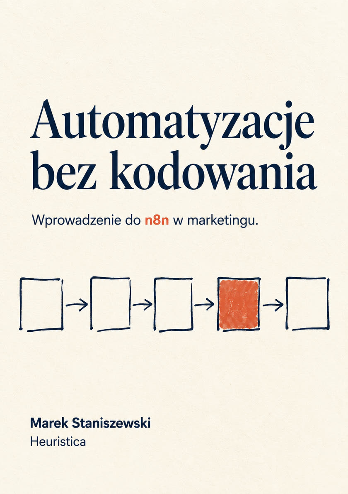

Monitor konkurencji
Codziennie rano zbiera doniesienia prasowe o wybranej marce, pyta model, które są istotne, i przysyła mailem tylko te.
Kurs online · czytaj za darmo
Wprowadzenie do n8n w marketingu
Przykłady działających systemów automatyzacji, zbudowane krok po kroku - bez żadnego kodowania. Dla osób, które chcą poznać podstawy pracy z platformą n8n.
Marek Staniszewski · Heuristica

Codziennie rano zbiera doniesienia prasowe o wybranej marce, pyta model, które są istotne, i przysyła mailem tylko te.
Dostaje listę adresów, z każdego wyciąga jedną tezę, a na końcu dopisuje wniosek z porównania wszystkich źródeł.
Brief na wejściu, trzej stratedzy o sprzecznych filozofiach i moderator, który zmusza ich do jednej decyzji.
Część 1. Start
Część 2. Trzy systemy
Część 3. Na koniec
Gotowe pliki do zaimportowania w n8n. Po imporcie wskaż własne dane dostępowe - w plikach nie ma żadnych kluczy ani haseł. Instrukcja importu jest w rozdziale 1.
Pobierz przepływy (ZIP) Pobierz książkę (PDF)
01-pierwszy-przeplyw.jsonRozdział 1Demo do zaimportowania w pierwszym kroku. Nie wymaga żadnych danych dostępowych.03-rss-filtr-mail.jsonRozdział 3RSS → filtr → Gmail. Ten sam przepływ, który budujesz ręcznie - do porównania.04-openai.jsonRozdział 4Pierwsze wywołanie modelu plus węzeł Wikipedii jako narzędzie.05-monitor-konkurencji.jsonRozdział 5Monitor konkurencji: harmonogram, pętla, ocena modelu, mail.06-syntezator-researchu.jsonRozdział 6Syntezator researchu: arkusz, pobieranie stron, scalanie, dwa wywołania modelu.07-panel-strategow.jsonRozdział 7Panel trzech ekspertów: formularz, trzy równoległe głosy, moderator, plik na wyjściu.